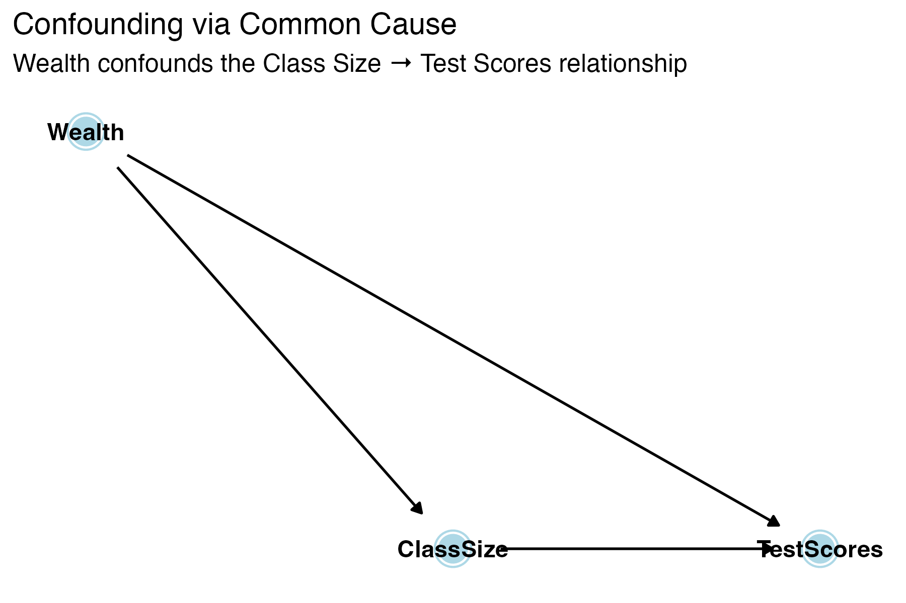
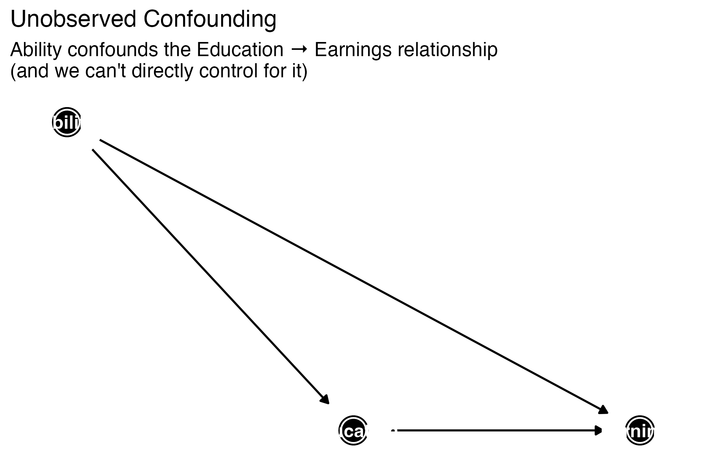
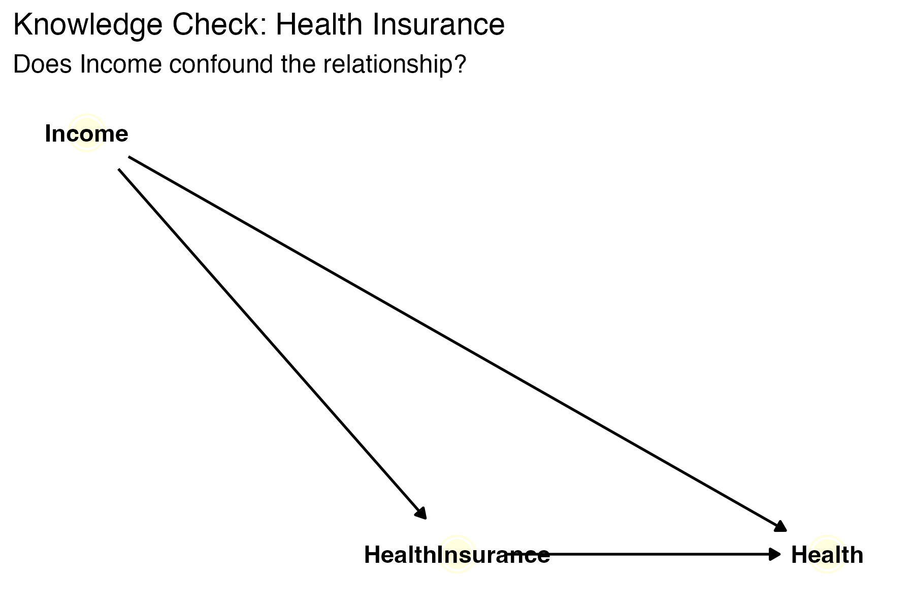
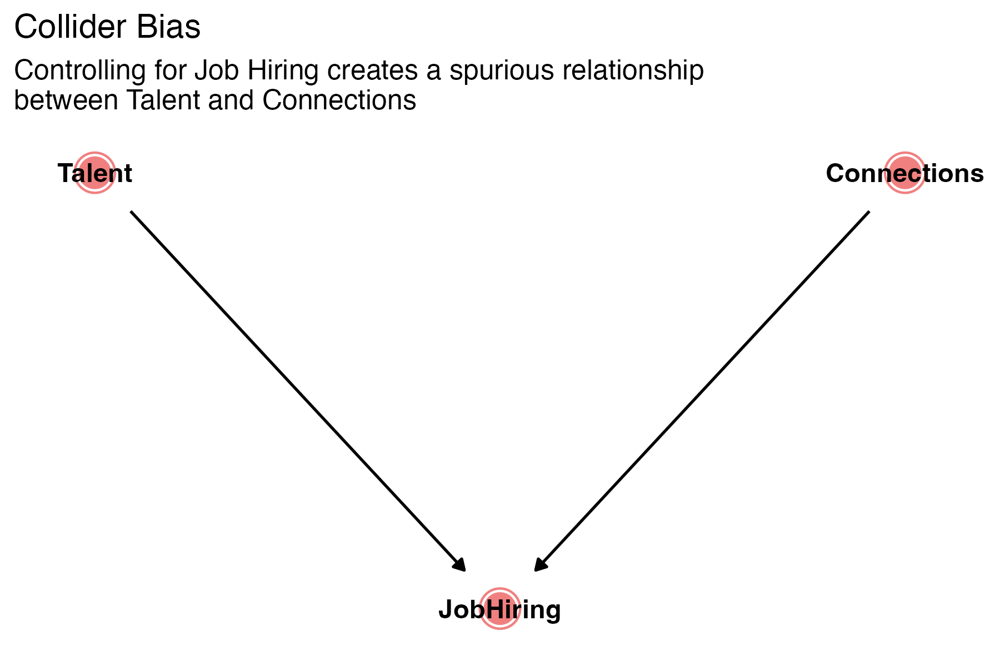

Chapters 8, 9, 10, 12
Spring 2026
| Chapter | Topic | Key Skills |
|---|---|---|
| 8 | Nonlinear Relationships | Marginal effects, log interpretation, interactions |
| 9 | Assessing Studies | Threats to internal validity |
| 10 | Panel Data & DiD | Fixed effects, difference-in-differences |
| 12 | Instrumental Variables | 2SLS, instrument validity, LATE |
Exam 3: April 23
~3 multi-part questions, 75 minutes, closed book. One-page formula sheet (double-sided) + calculator allowed.
We relax the assumption that the effect of \(X\) on \(Y\) is constant.
Three tools — all still linear in parameters, so OLS still works:
Quadratic Model
\[Y_i = \beta_0 + \beta_1 X_i + \beta_2 X_i^2 + u_i\]
Marginal effect of \(X\):
\[\frac{\Delta Y}{\Delta X} \approx \beta_1 + 2\beta_2 X\]
The effect of \(X\) on \(Y\) depends on the current value of \(X\).
Turning point (where the effect switches sign):
\[X^* = -\frac{\beta_1}{2\beta_2}\]
\[\widehat{TestScore} = 607.3 + 3.85 \times Income - 0.0423 \times Income^2\]
What is the marginal effect of income at \(Income = 10\) (thousand)?
\[\frac{\Delta TestScore}{\Delta Income} \approx 3.85 + 2(-0.0423)(10) = 3.85 - 0.846 = 3.00\]
At \(Income = 40\)?
\[\frac{\Delta TestScore}{\Delta Income} \approx 3.85 + 2(-0.0423)(40) = 3.85 - 3.384 = 0.47\]
Takeaway
You cannot interpret \(\beta_1\) or \(\beta_2\) in isolation. Always compute the marginal effect at a specific value of \(X\).
| Specification | Model | Interpretation of \(\beta_1\) |
|---|---|---|
| Level-level | \(Y = \beta_0 + \beta_1 X\) | A 1-unit \(\uparrow\) in \(X\) → \(\beta_1\) unit \(\uparrow\) in \(Y\) |
| Log-level | \(\ln(Y) = \beta_0 + \beta_1 X\) | A 1-unit \(\uparrow\) in \(X\) → \((100 \times \beta_1)\)% \(\uparrow\) in \(Y\) |
| Level-log | \(Y = \beta_0 + \beta_1 \ln(X)\) | A 1% \(\uparrow\) in \(X\) → \((\beta_1 / 100)\) unit \(\uparrow\) in \(Y\) |
| Log-log | \(\ln(Y) = \beta_0 + \beta_1 \ln(X)\) | A 1% \(\uparrow\) in \(X\) → \(\beta_1\)% \(\uparrow\) in \(Y\) (elasticity) |
Must Know
This table is one of the highest-value things to have on your formula sheet. Know how to apply it.
\[\ln(\widehat{Wage}) = 1.5 + 0.08 \times Educ\]
This is log-level. One additional year of education is associated with an approximately 8% increase in wages.
\[\widehat{Wage} = 12.5 + 3.2 \times \ln(Experience)\]
This is level-log. A 1% increase in experience is associated with a \(3.2/100 = \$0.032\) increase in wages.
The effect of \(X_1\) on \(Y\) may depend on the value of another variable \(X_2\).
\[Y_i = \beta_0 + \beta_1 X_{1i} + \beta_2 X_{2i} + \beta_3 (X_{1i} \times X_{2i}) + u_i\]
Marginal effect of \(X_1\):
\[\frac{\Delta Y}{\Delta X_1} = \beta_1 + \beta_3 X_2\]
The effect of \(X_1\) varies with \(X_2\).
1. Binary \(\times\) Binary (\(D_1 \times D_2\))
\[Y_i = \beta_0 + \beta_1 D_{1i} + \beta_2 D_{2i} + \beta_3 (D_{1i} \times D_{2i}) + u_i\]
2. Binary \(\times\) Continuous (\(D \times X\))
\[Y_i = \beta_0 + \beta_1 D_i + \beta_2 X_i + \beta_3 (D_i \times X_i) + u_i\]
3. Continuous \(\times\) Continuous (\(X_1 \times X_2\))
\[Y_i = \beta_0 + \beta_1 X_{1i} + \beta_2 X_{2i} + \beta_3 (X_{1i} \times X_{2i}) + u_i\]
\[\widehat{TestScore} = 700 - 1.0 \times STR - 0.5 \times PctEL - 0.02 \times (STR \times PctEL)\]
where \(STR\) = student-teacher ratio and \(PctEL\) = percent English learners.
Q: What is the effect of reducing STR by 1 in a district where PctEL = 20%?
\[\frac{\Delta TestScore}{\Delta STR} = -1.0 + (-0.02)(20) = -1.0 - 0.4 = -1.4\]
Reducing STR by 1 raises test scores by 1.4 points in a district with 20% English learners.
Q: What about in a district where PctEL = 0?
\[\frac{\Delta TestScore}{\Delta STR} = -1.0 + (-0.02)(0) = -1.0\]
Reducing STR by 1 raises test scores by 1.0 point.
Knowledge Check
Does the interaction term suggest a larger or smaller effect of reducing class size in districts with many English learners?
| Tool | Use When… | Key Skill |
|---|---|---|
| Polynomial (\(X^2\)) | Effect of \(X\) changes as \(X\) increases | Marginal effect at specific \(X\) |
| Logs | Think in percentages; skewed data | Log interpretation table |
| Interactions | Effect of \(X_1\) depends on \(X_2\) | Marginal effect at specific \(X_2\) |
Common Mistakes
Chapter 9 gives a framework for evaluating regression studies.
Two dimensions:
Internal Validity
The statistical inferences about causal effects are valid for the population being studied.
External Validity
The statistical inferences can be generalized to other populations and settings.
When we estimate \(Y_i = \beta_0 + \beta_1 X_i + u_i\), internal validity requires:
Five threats that can violate these:
An omitted variable \(Z\) causes bias if:
Solution: Include the omitted variable, use proxy variables, use panel data (Ch 10), or use instrumental variables (Ch 12).
Watch Out
Adding “kitchen sink” controls can introduce its own problems — only control for variables that satisfy the OVB conditions. Bad controls can create bias rather than remove it.
The true relationship is nonlinear, but you estimate a linear model.
Example: The effect of income on test scores is quadratic, but you fit a line.
Solution: Use the tools from Chapter 8 — polynomials, logs, interactions. Test for nonlinearity.
The variable you observe (\(\tilde{X}\)) differs from the true variable (\(X\)):
\[\tilde{X}_i = X_i + w_i\]
where \(w_i\) is the measurement error.
Attenuation Bias (Classical Measurement Error)
If the measurement error is classical (uncorrelated with \(X\)), then OLS is biased toward zero.
\[\hat{\beta}_1 \xrightarrow{p} \beta_1 \times \frac{\sigma_X^2}{\sigma_X^2 + \sigma_w^2}\]
The ratio \(\frac{\sigma_X^2}{\sigma_X^2 + \sigma_w^2} < 1\), so \(|\hat{\beta}_1|\) is too small.
Solution: Get better data, use IV (Ch 12).
The sample is not representative of the population due to a selection process related to \(Y\).
Examples:
Solution: Use a randomly selected sample, correct for selection (Heckman correction), or be cautious about generalization.
\(X\) causes \(Y\), but \(Y\) also causes \(X\).
Examples:
Solution: Instrumental variables (Ch 12), randomized experiments, natural experiments.
| Threat | Problem | Consequence | Solution |
|---|---|---|---|
| Omitted variable | Relevant variable left out | Bias in \(\hat{\beta}_1\) | Add controls, panel data, IV |
| Functional form | Wrong shape modeled | Bias in \(\hat{\beta}_1\) | Polynomials, logs, interactions |
| Measurement error | \(X\) measured with error | Attenuation bias (toward 0) | Better data, IV |
| Sample selection | Non-random sample | Bias in \(\hat{\beta}_1\) | Random sampling, correction |
| Simultaneous causality | \(X \leftrightarrow Y\) | Bias in \(\hat{\beta}_1\) | IV, experiments |
Knowledge Check
A researcher studies the effect of hospital spending on patient outcomes, but only includes patients who survived. Which threat applies?
. . .
Sample selection bias — the sample is conditioned on an outcome (survival) related to \(Y\).
A directed acyclic graph (DAG) maps out the causal relationships between variables.
Why DAGs Matter for This Exam
DAGs give a visual framework for diagnosing the five threats — especially OVB, simultaneous causality, and measurement error.
| Path Type | Structure | Default | Example |
|---|---|---|---|
| Causal (front-door) | \(X \rightarrow M \rightarrow Y\) | Open | Education → Job → Earnings |
| Backdoor | \(X \leftarrow Z \rightarrow Y\) | Open | Class Size ← Wealth → Scores |
| Collider | \(X \rightarrow Z \leftarrow Y\) | Closed | Talent → Hiring ← Connections |


Gray node = unobserved
Every case of omitted variable bias is an open backdoor path:
. . .
\[\text{Association} = \underbrace{\text{Causal Effect}}_{\text{front-door}} + \underbrace{\text{Bias}}_{\text{open backdoor}}\]
Controlling for a variable blocks all paths through it. This can be good or bad:
| Path Type | Default | Controlling… | Result |
|---|---|---|---|
| Backdoor (\(X \leftarrow Z \rightarrow Y\)) | Open | Closes it | Removes bias ✓ |
| Collider (\(X \rightarrow Z \leftarrow Y\)) | Closed | Opens it | Creates bias ✗ |
| Mediator (\(X \rightarrow Z \rightarrow Y\)) | Open | Closes it | Blocks causal effect ✗ |
Bad Controls

Knowledge Check
You want to estimate the causal effect of Health Insurance on Health. Income affects both.
Paths:
After controlling for Income, the only open path is causal. Effect is identified.

Knowledge Check
You want to know if Talent affects Connections. Both cause Job Hiring.
Should you study this relationship among hired workers only?
No! Conditioning on Job Hiring (the collider) opens the path between Talent and Connections.
Among the hired, low Talent becomes correlated with high Connections — a spurious association.
This is collider bias (a.k.a. selection bias).
DAGs help us see why each method works:
| Problem (in DAG terms) | Method | How it helps |
|---|---|---|
| Open backdoor via observed confounder | Add control variable | Closes the backdoor path |
| Open backdoor via time-invariant unobserved confounder | Fixed effects (Ch 10) | Absorbs all \(\alpha_i\) variables |
| Open backdoor via any unobserved confounder | IV / 2SLS (Ch 12) | Isolates exogenous variation in \(X\) |
| Open backdoor; treatment + control available | DiD (Ch 10) | Parallel trends closes the path |
| No backdoor paths (by design) | RCT | Randomization severs arrows into \(X\) |
Cross-Chapter Connection
When a problem asks “which method would address this threat?” — draw the DAG first. The answer becomes visual.
Panel data = same units observed over multiple time periods.
Two powerful tools:
| Type | Units | Time Periods | Example |
|---|---|---|---|
| Cross-sectional | Many | One | Survey of 1000 workers in 2025 |
| Time series | One | Many | US GDP, 1950–2025 |
| Panel | Many | Many | 50 states, 2000–2025 |
Panel vs. Pooled Cross-Sections
A panel tracks the same units over time (Bob in 2020 and Bob in 2021).
A pooled cross-section draws different samples each period (different people each year).
The key advantage: we can control for unobserved, time-invariant characteristics.
\[Y_{it} = \beta_0 + \beta_1 X_{it} + \alpha_i + u_{it}\]
Key Insight
Fixed effects eliminate OVB from any time-invariant omitted variable — even ones you can’t observe or measure.
Approach 1: First-difference estimator
Take the difference between two periods:
\[Y_{it} - Y_{i,t-1} = \beta_1(X_{it} - X_{i,t-1}) + (u_{it} - u_{i,t-1})\]
The fixed effect \(\alpha_i\) drops out because \(\alpha_i - \alpha_i = 0\).
Approach 2: Entity dummies (LSDV)
Include a dummy variable for each entity:
\[Y_{it} = \beta_1 X_{it} + \gamma_1 D_{1i} + \gamma_2 D_{2i} + \cdots + u_{it}\]
Approach 3: Demeaning
Subtract the entity mean: \(\tilde{Y}_{it} = Y_{it} - \bar{Y}_i\), then regress \(\tilde{Y}\) on \(\tilde{X}\).
All three approaches give the same \(\hat{\beta}_1\).
\[Y_{it} = \beta_1 X_{it} + \alpha_i + \lambda_t + u_{it}\]
Entity FE + Time FE together control for:
Limitation
Fixed effects cannot control for omitted variables that change over time and vary across units. For that, you may need IV (Ch 12) or DiD.
DiD estimates a causal effect by comparing changes over time between a treatment group and a control group.
| Before | After | Change | |
|---|---|---|---|
| Treatment | \(\bar{Y}_{T,before}\) | \(\bar{Y}_{T,after}\) | \(\Delta \bar{Y}_T\) |
| Control | \(\bar{Y}_{C,before}\) | \(\bar{Y}_{C,after}\) | \(\Delta \bar{Y}_C\) |
DiD estimate:
\[\hat{\delta}_{DiD} = (\bar{Y}_{T,after} - \bar{Y}_{T,before}) - (\bar{Y}_{C,after} - \bar{Y}_{C,before})\]
\[= \Delta \bar{Y}_T - \Delta \bar{Y}_C\]
\[Y_{it} = \beta_0 + \beta_1 \text{Treat}_i + \beta_2 \text{After}_t + \beta_3 (\text{Treat}_i \times \text{After}_t) + u_{it}\]
| Coefficient | Meaning |
|---|---|
| \(\beta_0\) | Control group mean, before |
| \(\beta_1\) | Difference between treatment and control, before |
| \(\beta_2\) | Change over time for control group |
| \(\beta_3\) | DiD estimate = causal effect of treatment |
The DiD Coefficient
\(\beta_3\) is the coefficient on the interaction term \(\text{Treat} \times \text{After}\). This is the causal effect of interest.
Parallel Trends
In the absence of treatment, the treatment and control groups would have followed the same trend over time.
If Parallel Trends Fails
The DiD estimate is biased. Any pre-existing divergence between groups gets picked up as a “treatment effect.”
Knowledge Check
A state raises its minimum wage in 2020. You have average teen employment rates:
| 2019 | 2021 | |
|---|---|---|
| Treatment state | 50% | 47% |
| Control state | 53% | 52% |
Calculate the DiD estimate of the minimum wage effect on teen employment.
. . .
Step 1: Change in treatment: \(47 - 50 = -3\) pp
Step 2: Change in control: \(52 - 53 = -1\) pp
Step 3: DiD = \((-3) - (-1) = -2\) pp
The minimum wage increase is associated with a 2 percentage point decrease in teen employment.
Standard Errors in Panel Data
With panel data, observations within the same entity are likely correlated over time. Use clustered standard errors (cluster at the entity level) — otherwise SEs are too small and you over-reject.
When \(E(u_i | X_i) \neq 0\) (endogeneity), OLS is biased and inconsistent.
Instrumental variables (IV) solve this by finding a variable \(Z\) that:
Think of IV as isolating the “good” variation in \(X\) — the part unrelated to the error term.
Three threats produce endogeneity (\(E(u_i | X_i) \neq 0\)):
| Threat | Example |
|---|---|
| Omitted variable bias | Ability biases returns to schooling |
| Simultaneous causality | Police ↔︎ crime |
| Measurement error | Self-reported income |
When we cannot fix these with controls, panel data, or experiments, we turn to instrumental variables.
An instrument \(Z\) must satisfy:
1. Relevance
\(Z\) is correlated with \(X\): \(\text{corr}(Z_i, X_i) \neq 0\)
\(Z\) must actually affect \(X\). Testable with the first-stage regression.
2. Exogeneity (Independence)
\(Z\) is uncorrelated with the error term: \(\text{corr}(Z_i, u_i) = 0\)
\(Z\) must be “as good as randomly assigned.” Not directly testable — requires reasoning.
3. Exclusion Restriction
\(Z\) affects \(Y\) only through \(X\), not directly.
There is no direct causal path from \(Z\) to \(Y\) that bypasses \(X\). Not directly testable.
Problem: Estimate the causal effect of schooling on wages.
\[\ln(wage_i) = \beta_0 + \beta_1 schooling_i + u_i\]
OVB: Ability is in \(u_i\) and correlated with schooling → \(\hat{\beta}_1\) is biased upward.
Proposed instrument: Quarter of birth (\(Z\))
Caution
Exclusion restriction is always arguable, not provable. This is where most debates about IV studies focus.
Stage 1: First-Stage Regression
Regress \(X\) on \(Z\) (and any controls \(W\)):
\[X_i = \pi_0 + \pi_1 Z_i + \pi_2 W_i + v_i\]
Save the predicted values \(\hat{X}_i\).
Stage 2: Second-Stage Regression
Regress \(Y\) on \(\hat{X}\) (and any controls \(W\)):
\[Y_i = \beta_0 + \beta_1 \hat{X}_i + \beta_2 W_i + u_i\]
Why this works: \(\hat{X}_i\) contains only the variation in \(X\) that comes from \(Z\). Since \(Z\) is exogenous, \(\hat{X}_i\) is uncorrelated with \(u_i\).
Important
Use a proper IV/2SLS command (e.g., ivregress 2sls in Stata). Running two separate regressions gives wrong standard errors.
When the instrument \(Z\) is binary (0 or 1), the IV estimate simplifies:
\[\hat{\beta}_1^{IV} = \frac{\bar{Y}_{Z=1} - \bar{Y}_{Z=0}}{\bar{X}_{Z=1} - \bar{X}_{Z=0}} = \frac{\text{Reduced form}}{\text{First stage}}\]
| Piece | Regression | Meaning |
|---|---|---|
| Reduced form | \(Y\) on \(Z\) | Total effect of \(Z\) on \(Y\) (includes the path through \(X\)) |
| First stage | \(X\) on \(Z\) | Effect of \(Z\) on \(X\) |
| IV estimate | Ratio | Causal effect of \(X\) on \(Y\), scaled by how much \(Z\) moves \(X\) |
Intuition
The reduced form tells you how much \(Z\) moves \(Y\). The first stage tells you how much \(Z\) moves \(X\). Dividing gives you how much \(X\) moves \(Y\).
If \(Z\) is only weakly correlated with \(X\), the IV estimator has serious problems:
The F > 10 Rule of Thumb
Test instrument relevance with the first-stage F-statistic.
This is a necessary condition you should always check.
How to get the F-statistic: Run the first-stage regression and look at the F-statistic on the excluded instrument(s).
Local Average Treatment Effect (LATE)
IV estimates the causal effect for compliers — the subpopulation whose treatment status is changed by the instrument.
Four types of individuals:
| Type | Behavior |
|---|---|
| Compliers | Do what the instrument “tells” them (take treatment when \(Z=1\), don’t when \(Z=0\)) |
| Always-takers | Take treatment regardless of \(Z\) |
| Never-takers | Never take treatment regardless of \(Z\) |
| Defiers | Do the opposite of what \(Z\) “tells” them |
Knowledge Check
A researcher wants to estimate the effect of smoking on health. She proposes using cigarette taxes as an instrument.
Evaluate each condition:
. . .
1. Relevance: Higher taxes → higher prices → less smoking. ✓ (testable)
. . .
2. Exogeneity: Are cigarette taxes correlated with unobserved determinants of health? Possibly — states with higher taxes may also have better health infrastructure. ⚠️
. . .
3. Exclusion: Do cigarette taxes affect health only through smoking? Maybe not — tax revenue could fund health programs. ⚠️
. . .
Verdict: Relevance is fine, but exogeneity and exclusion are debatable. The researcher would need to argue carefully and possibly add controls.
| Concept | Key Point |
|---|---|
| Endogeneity | \(E(u_i \mid X_i) \neq 0\) → OLS is biased |
| Valid instrument | Relevant + exogenous + exclusion restriction |
| 2SLS | First stage predicts \(X\); second stage uses \(\hat{X}\) |
| Weak instruments | \(F < 10\) in first stage → unreliable |
| LATE | IV estimates effect for compliers only |
Common Mistakes
These chapters are deeply linked:
You suspect your OLS estimate is biased. What do you do?
| If the problem is… | Try… |
|---|---|
| Wrong functional form | Polynomials, logs, interactions (Ch 8) |
| Time-invariant omitted variable + panel data available | Entity fixed effects (Ch 10) |
| Common time shock | Time fixed effects (Ch 10) |
| Clear before/after treatment with a control group | DiD (Ch 10) |
| Endogeneity remains (OVB, simultaneity, meas. error) | Instrumental variables (Ch 12) |
| Non-random sample | Address selection, or be cautious |
Formula Sheet Suggestions
Your double-sided formula sheet should include:
Practice resources:
Study Strategy
ECON3500 | Exam 3 Review